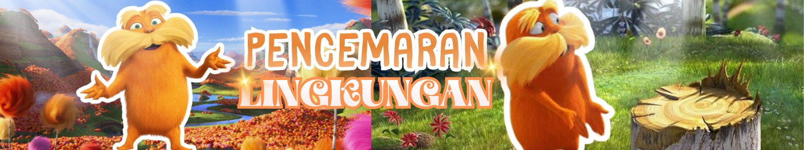

Pencemaran Lingkungan
Dibuat Oleh: Devika 93.08

Apa itu pencemaran lingkungan? Pencemaran lingkungan adalah perubahan negatif pada kondisi lingkungan yang disebabkan karena adanya perkembangan ekonomi, sosial, budaya dan teknologi. Perubahan itu dianggap mencemari ketika sudah melampaui ambang batas toleransi yang dimiliki oleh ekosistem yang ada. Bahan pencemar tersebut dapat berbentuk padat, cair, gas, suara, cahaya, suhu, radiasi dan mahluk hidup dalam kadar tertentu ke lingkungan baik melalui udara, air maupun daratan. Bahan pencemar dalam bentuk padat, contohnya adalah sampah kemasan, sampah makanan, plastik, dll. Bahan pencemar dalam bentuk cair, contohnya yaitu air limbah industri dan air limbah detergen. Bahan pencemar dalam bentuk gas, contohnya yaitu gas buang dari mesin maupun kendaraan. Sedangkan bahan pencemar dari mahluk hidup dapat berupa virus, bakteri, jamur dan lain-lain.